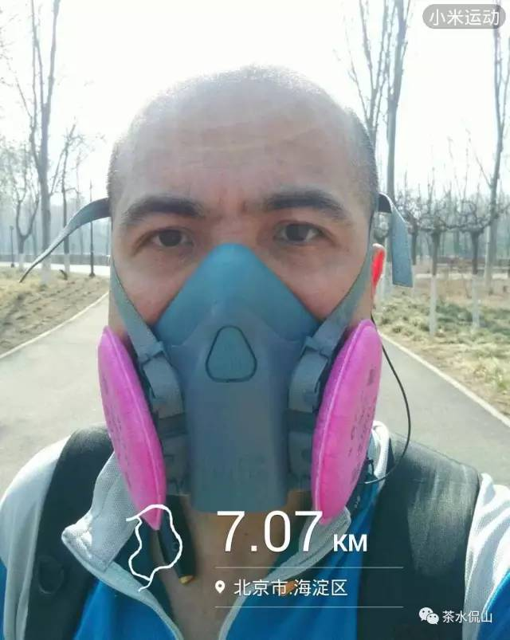
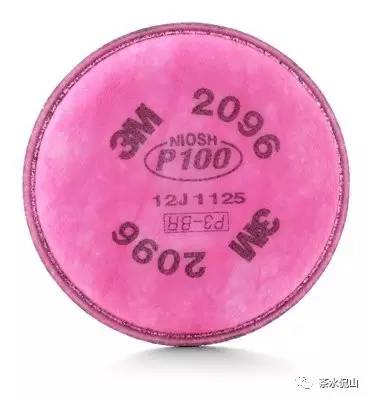
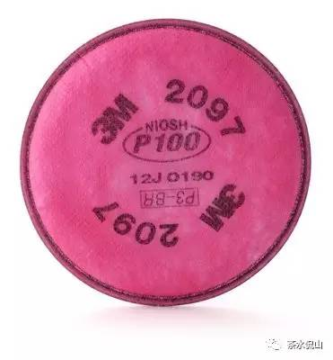

在2013年我开始跑步，那年就开始考虑空气质量不好的时候跑步的问题，开始尝试了当时比较流行的运动口罩，发现防护指数没有通过任何标准认证（现在淘宝卖的不少面具还是这样），另外就是冷凝水无法很好的排出，所以就尝试性的选择了3M 7502。
用起来不错，后来还建了个豆单，推荐给了不少朋友。
就是这货，这个面罩属于3M的可重复使用呼吸防护面罩（http://solutions.3m.com.cn/wps/portal/3M/zh_CN/PPE_SafetySolutions_APAC/Safety/Products/One/Two/），这个系列的面罩过滤配件可更换，这个面罩的官方简介在：
http://www.3m.com.cn/3M/zh_CN/company-cn/all-3m-products/~/3M-7502-10-?N=5002385+3291848809&rt=rud
跟6XXX系列的不同应该是下部分有个很大的排气阀，这样呼吸感觉会更好，而且应该对戴眼镜的同学影响减小吧(我一般不戴眼镜，没实际测试过)。冷凝水也可以从排气阀流出。
和7501的区别应该只是7501是小号，这是中号，实际产品我没比较过。
配上209X系列我在雾霾天跑过不少5公里，当然也有更远。

面罩是可以拆开清洗的，我自己就拆洗过很多次，貌似如何拆装网上没有介绍，有机会我可以发个拆装视频啥的。
在使用前建议检测下密封性，方法是用手掌按住两侧的过滤配件，就是那个粉红色的东西，然后吸气，如果你感觉
那就表明密封性正常。
下面介绍下我用过的几款配件：
3M 2091 P100 高效防尘滤棉，官方介绍在：
http://www.3m.com.cn/3M/zh_CN/company-cn/all-3m-products/~/3M-2091P100-100-?N=5002385+3291848821&rt=rud
这是我认为很适合配合7502使用对抗PM2.5的配件，所以一般我的使用组合就是7502+2091。
过滤效率高达99.97%，满足NIOSH P100系列测试标准，任何口罩的和其相比只能算战斗力为5的渣。


3M 2096 P100酸性气体异味及高效滤棉 和 3M 2097 P100高效滤棉滤除有机蒸气异味，官方介绍分别在
http://www.3m.com.cn/3M/zh_CN/company-cn/all-3m-products/~/3M-2096-P100-100-?N=5002385+3291849101&rt=rud
http://www.3m.com.cn/3M/zh_CN/company-cn/all-3m-products/~/3M-2097P100-100-?N=5002385+3291848824&rt=rud
这两款基本参数和2091一致，不过是增加了异味过滤，具体干啥的我也不知道，不过感觉对防PM2.5这个和2091是一致的，所以如果2091便宜还是2091合适。
http://www.3m.com.cn/3M/zh_CN/company-cn/all-3m-products/~/3M-7093-P100-60-?N=5002385+3291848700&rt=rud
一样的P100，不同的是寿命长透气性好，抗火花外壳，防液体喷溅，淋浴消毒无需取下，当然价格也是比上面的贵一些。
顺便提一下7093C，这个我没用过，看介绍这个就是7093的气味过滤加强版。
关于过滤配件的使用寿命， 这个比较遗憾我没在网上找到过具体时间介绍，手头有一个没开封的2091里面有一份详细介绍，将来打开如果有相关信息我会再发个本文的续之类的。过滤寿命跟使用环境的关系很大，一般的建议就是感觉呼吸不畅的时候就该更换了。
最后说下面具的缺点：
第一，便携性不佳。永远是直直愣愣的，放哪都要占一大块地方，感觉最方便的方式就是戴着。
第二，作为运动呼吸面具增加运动强度。我个人观测能增加平均心跳十次，所以随着年龄的增大，我雾霾天干脆选择了不跑步。
好像从去年开始出现了不少主动式呼吸的呼吸面具和口罩，我觉得这算是一个不错的选择，主动送风能让呼吸顺畅，而且送风形成的正压感觉可以提高密封性，可惜现在没啥专业厂做这个，尤其是没有3M，另外也没有出现专业测评。
现在手头有一个不过用的比较少，有空拿出来用霾表测测效果也许会再发介绍。
关注或联系我长按下图识别二维码
或者搜索微信公众号：cschatcs